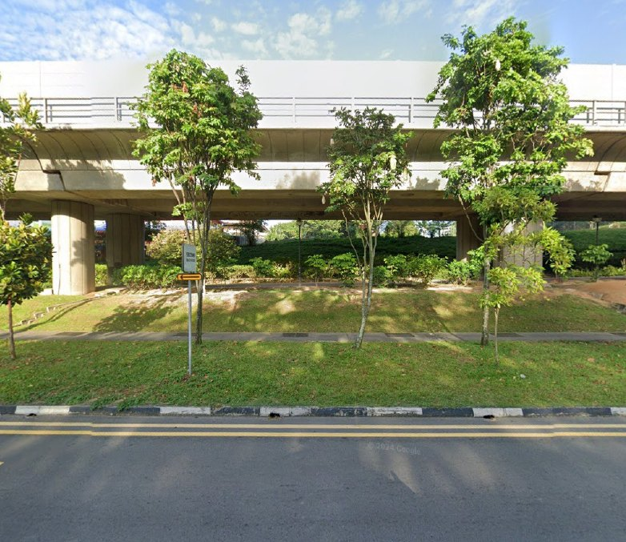
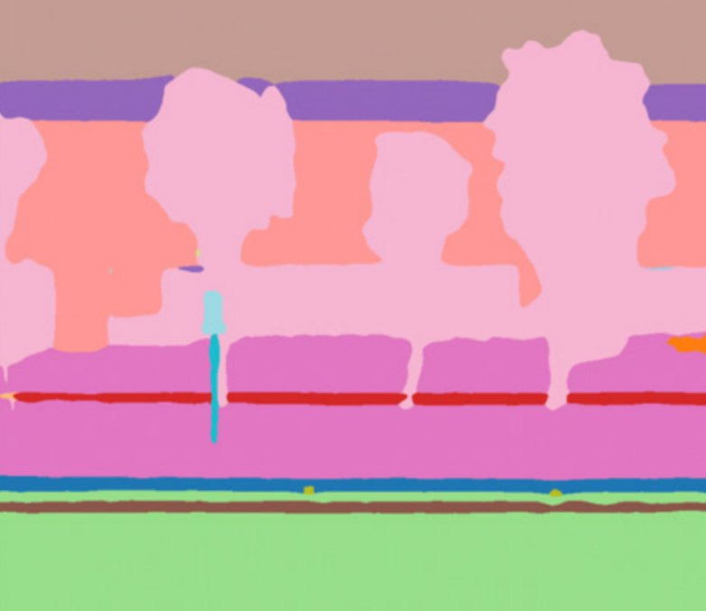
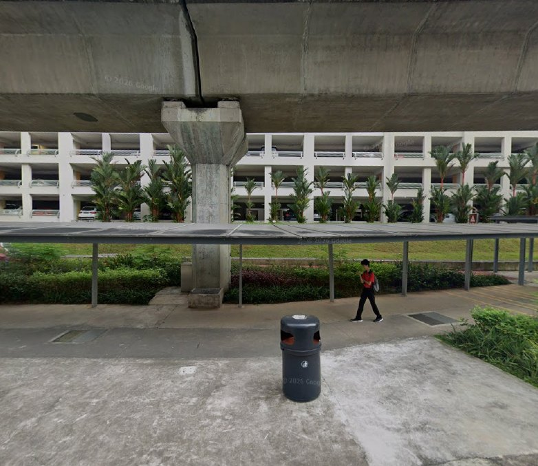
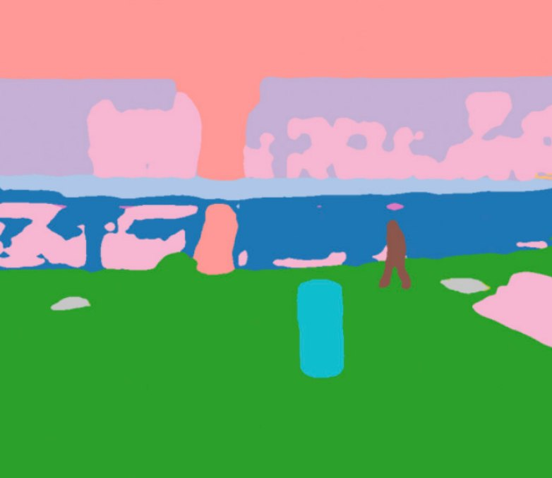

AR5801 | SEMESTER 1 AY2026/2027
UNDER-TONES: SEARCHING URBAN SOUNDSCAPES
Listen to the soundscapes: synthetic acoustic scenarios accompanying the AR5801 search-to-design project.
Select a case and press play. Headphones recommended.
CASE 53 | YISHUN
BARRIER | FILTER + INTRODUCE
A persistent roadside soundscape alongside the elevated MRT corridor, informing a protected resting environment.
SEARCH EVIDENCE Why this site was selected


- Natural 40%
- Mobility 29%
- Rail 11%
- Other 15%
- Built 5%
- Setting
- Covered walkway beside the elevated MRT, Yishun Avenue 2
- Visual cluster
- C3, rail-natural mix
- Contextual type
- Persistent roadside exposure
- Acoustic challenge
- 0.86
- Spatial feasibility
- 0.77
- Recommended prototype family
- Barrier
BEFORE EXISTING CONDITION
This recording could not be loaded. Please try again later.
Player not working? Open the audio file directly.
AFTER PROPOSED CONDITION
An interpretive listening scenario exploring roadside filtering and the introduction of localized sounds within the protected resting pockets.
This recording could not be loaded. Please try again later.
Player not working? Open the audio file directly.
CASE 437 | BUKIT PANJANG
SEQUENCE | REACT + TRANSFORM
A commuter corridor with intermittent overhead LRT events, informing a responsive sequential experience.
SEARCH EVIDENCE Why this site was selected


- Natural 11%
- Rail 33%
- Other 12%
- Built 43%
- People 1%
- Setting
- Covered linkway under the elevated LRT, Jelapang LRT, Bukit Panjang Ring Road
- Visual cluster
- C2, mobility-rail-natural mix
- Contextual type
- Mixed road and rail exposure
- Acoustic challenge
- 0.49
- Spatial feasibility
- 0.72
- Recommended prototype family
- Sequence
BEFORE EXISTING CONDITION
This recording could not be loaded. Please try again later.
Player not working? Open the audio file directly.
AFTER PROPOSED CONDITION
An interpretive scenario in which responsive architectural modules create a sequential acoustic experience during intermittent overhead LRT events.
This recording could not be loaded. Please try again later.
Player not working? Open the audio file directly.
HOW THE SEQUENCE FAMILY WORKS
Demonstration: approaching LRT train
As a train approaches, the Sequence family is intended to respond through a progression of modules along the commuter route. This demonstration illustrates the proposed timing and spatial sequence of the intervention.
Headphones recommended — press play to hear the demonstration.
This demonstration could not be loaded. Please try again later.
Video not working? Open the demonstration directly.